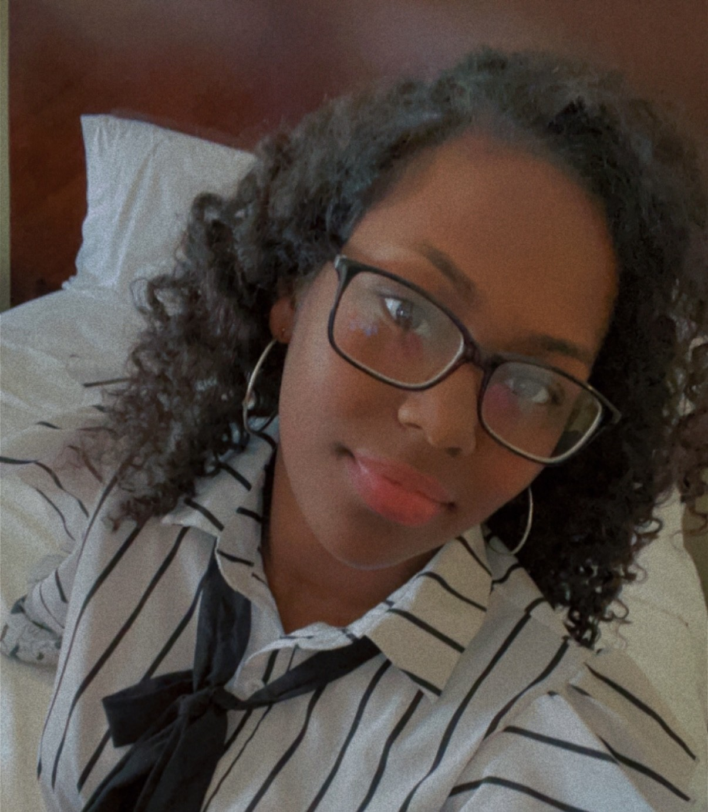

About Me

I knew I had found my vocation when I first learned to code in my senior year of high school. My initial curiosity swiftly developed into a strong enthusiasm for web programming, which inspired me to seek an information technology bachelor's degree. I'm now pursuing a Master's in Mass Communication and Journalism with a focus on Web Design and Online Communication since I'm eager to broaden my knowledge.
For me, web design is a chance to combine my technical expertise with artistic passion, going beyond simply creating useful websites. My ability to produce digital experiences that are both aesthetically pleasing and easy to use inspires me to keep learning and developing. I work hard to combine efficiency and beauty in every project, whether it's creating captivating user interfaces or improving website functionality.
My objective as I advance in the industry is to use my abilities to produce significant digital experiences that have a purpose in addition to being aesthetically pleasing.
Connect with Me